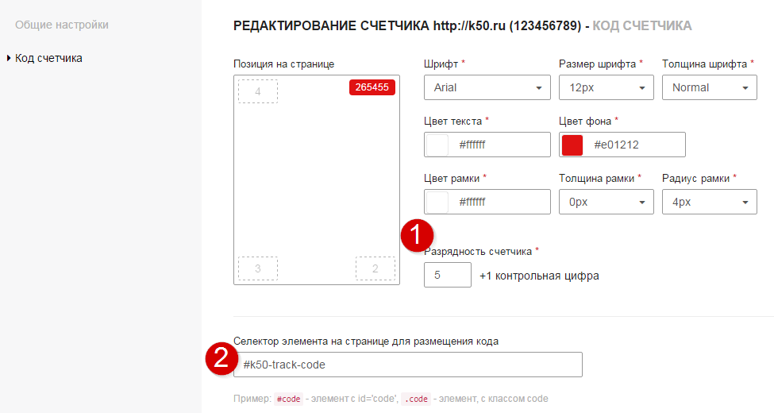
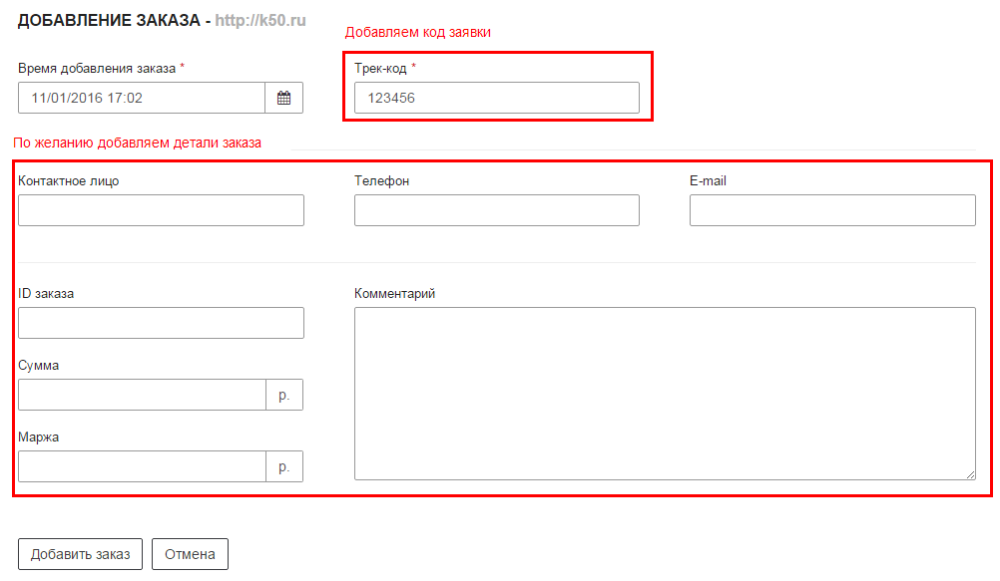

Кодовый трекер
Кодовый трекер - технология определения источников обращений клиентов с помощью кодов заявок (трек-кодов). Данный функционал доступен всем пользователям трекера, бесплатно .
Настройка кода
После создания счетчика перейдите в настройки кода отслеживания.

Обратите внимание на следующие параметры
Данная настройка задаёт максимальное количество цифр в трек-коде. Например при разрядность 6 (5+1) id заявки будет находиться в интервале от 1 до 999999.
Разрядность следует выбирать в соответствии порядком вашей дневной посещаемости.
Например, при посещаемости 1000 в день рекомендуемая разрядность составит 4 (3+1).
Обратите внимание
Если указанная разрядность ниже рекомендуемой, возможно некорректное отслеживание обращений.
Данная настройка позволяет указать с помощью CSS селекторов html-элемент, в который следует подставлять трек-код. По умолчанию код подставляется в элемент div с id k50-track-code, который отображается над всеми элементами сайта.
Вы можете указать свой собственный элемент (например, внедрить код в интерфейс корзины), изменив селектор в настройках.
Установка кода на сайт
Настроив код, скопируйте его и вставьте на все страницы перед </body>. Вы можете установить код с помощью Google Tag Manager
Обратите внимание
По умолчанию код обращаеся к библиотеке http://cdn.k50.ru/k50/k50tracker2.js.
Для HTTPS сайтов следует её заменить на https://k50-a.akamaihd.net/k50/k50tracker2.js
Добавление заказа
В момент обращения пользователя следует спросить у него код заявки, отображаемый на сайте. Далее следует перейти в Список Заказов и добавить заказ.

Далее при добавлении заказа следует указать код заявки, который сообщил пользователь, чтобы трекер ассоциировал заказ с посещением.
Подробнее читайте в разделе Список Заказов
Отчеты
Статистика по сопоставленным обращениям будет доступна в Конструкторе отчетов
Данные по обращениям, сумме и марже, указанные в заказе, будут пробрасываться в метриках заказы, доход и маржа.
Экспорт данные в сторонние сервисы
Вы можете экспортировать данные в К50 статистику, Google Analytics, а также в любой другой источник с помощью API трекера. Подробнее читайте в разделе про интеграцию с внешними системами